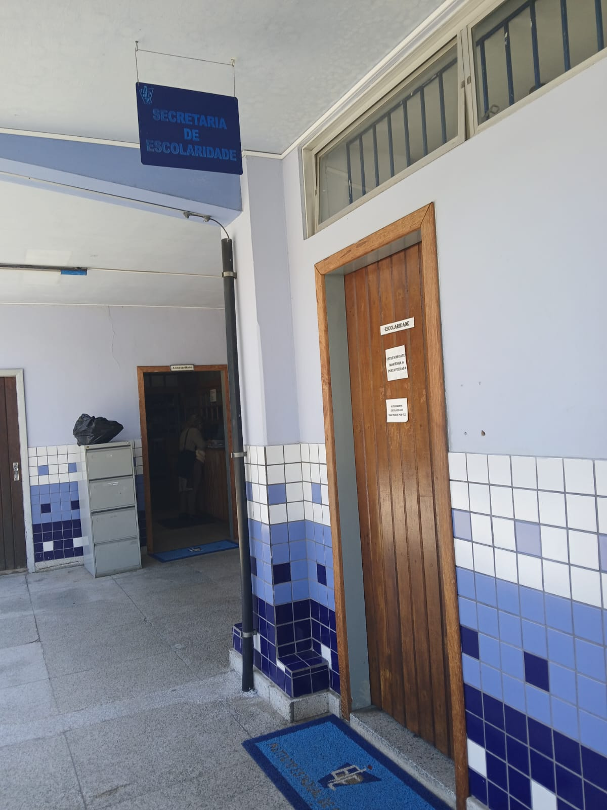
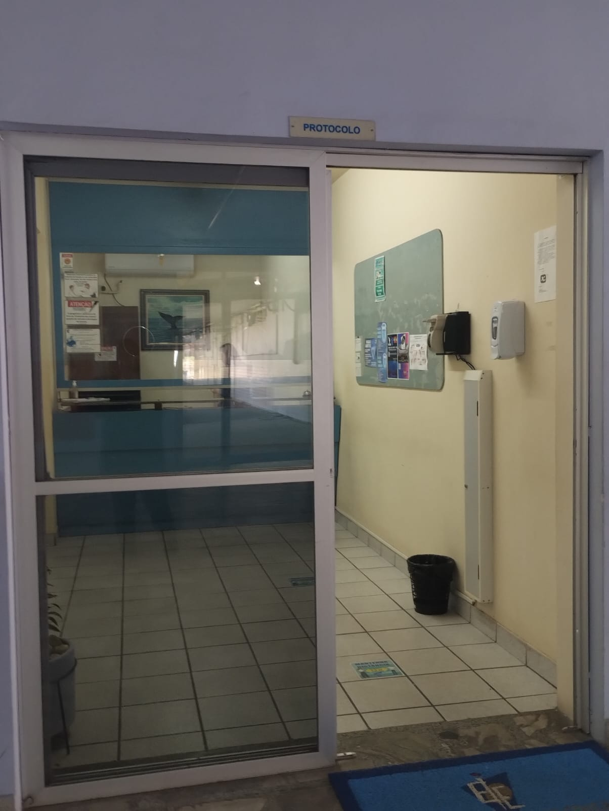
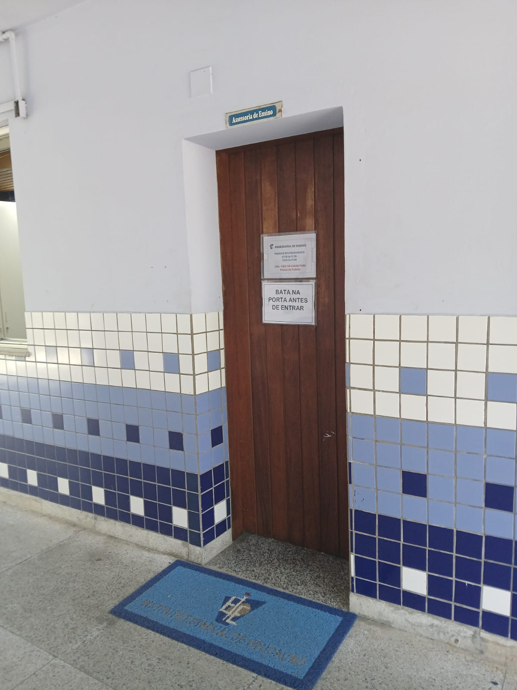

IEE
Instituto Estadual da Educação

A escola oferece as seguintes modalidades de ensino:
- Ensino Pré Fundamental do 1° ao 5° ano
- Ensino Fundamental do 6° ao 9° ano
- Ensino médio
- Magistério
- Reforço nos laboratórios
- Cultura e Esporte
Departamentos da Escola
ESCOLARIDADE/SECRETARIA:
Organiza a documentação e Matrículas. Organização dos alunos nas série, Atendimento ao público, Faz a entrega dos boletins, Para alunos, pais e responsáveis. horário de atendimento: Das 7 da manhã até as 9 da noitepara mais Informações
.png)
ESCOLARIDADE 
PROTOCOLO:
Passa as informações para a comunidade Solicitar materiais Encaminha adequado para os outros setores Horário: 7 às 19:30 sem intervalo Para qualquer pessoa Professor pega as chaves dos laboratórios Tem um mural de informações
para mais Informações
PROTOCOLO 
BIBLIOTECA:
Horário de funcionamento: 7 da manhã às 19 funcionamente do espaço: desenvolver o hábito da leitura, ter uma interação social, Desenvolver pesquisas e Dar continuidade aos conteúdos propostos em sala de aula é opcionado o empréstimo de livros, apartir do uso de uma "carteirinha" feita pela biblioteca. Atenção! o prazo de devolução dos livros é 20 dias possivel renovar caso necessário
para mais Informações
BIBLIOTECA

ASSESSORIA DE ENSINO:
Assessoria de ensino vai lhe Apresentar a escola, Integrar a escola, Auxiliar no melhor funcionamento dos departamentos da escola, auxiliar em questões como Bolsa família e pé de meia
para mais Informações
ASSESSORIA DE ENSINO 
SOE:
objetivo principal: orientar o aluno resolver questões referente a notas, faltas, atestados, mudar de sala (quando o(a) professor(a) solicita) ou turno. horarios de atendimento: 7:30h as 21:00h.